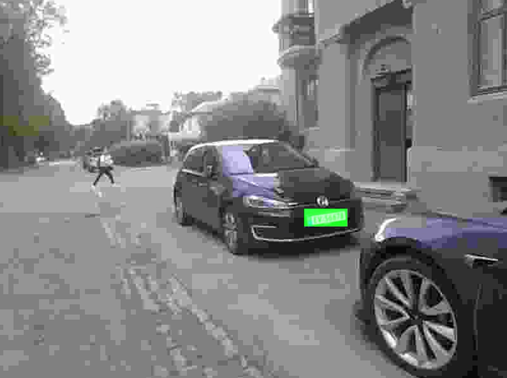
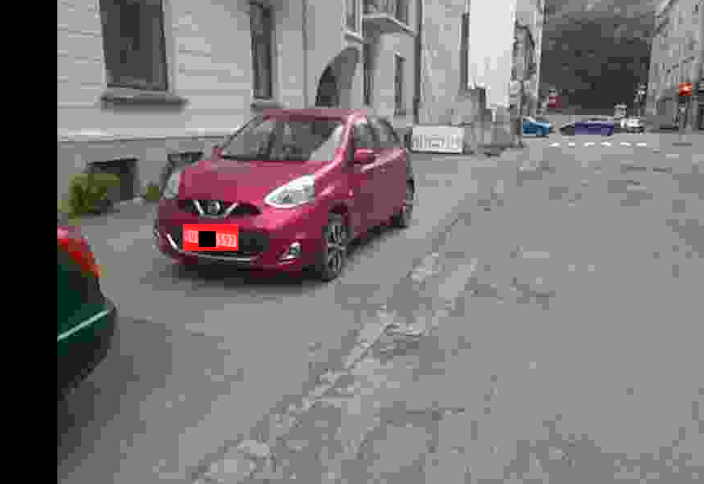

Er bilen elektrisk?
Et gruppeprosjekt ved NTNU som avgjør om en bil er elektrisk, ende til ende fra ett enkelt bilde. Jeg bygde datasyn-delen: en finjustert YOLOv8 som finner skiltet, så et CNN trent fra bunnen for å lese det, og til slutt et oppslag mot Statens vegvesen for å avgjøre motortype.
Pipelinen
- Skiltdeteksjon: YOLOv8, ettertrent på et lite eget datasett med norske skilt fra varierte vinkler.
- Skiltlesing: Et eget CNN trent fra bunnen på utklipp av skilt. Lite, raskt, overraskende treffsikkert.
- Kjøretøyoppslag: Skilttegnene sendes til vegvesenets API, som returnerer motortype. Elektrisk eller ikke faller ut direkte.

Hvorfor trene en skiltleser fra bunnen
Generell OCR funker på skilt, men det er overkill: for mange parametere, for lite domene. Norske skilt har et fast alfabet, fast font, to forutsigbare utforminger. Et lite CNN med riktig induktiv bias slo standard-OCR på dataen jeg hadde, og kjørte en størrelsesorden raskere.

Resultater ende til ende
På testopptak fra ekte gater i Trondheim merket systemet hver bil med riktig motorklasse i ett bilde. Elbiler ble markert grønt, fossile rødt.


Gjennomgang
Full gjennomgang av pipelinen.
Hva jeg ville forbedret
Klassifikatoren nøler av og til på skilt med mye bevegelsesuskarphet, slik du får det fra biler som faktisk kjører. Et lite tidsvindu med bilder, eller et raskt deblurring-pre-pass, kunne tettet gapet. Vegvesen-API-et var også det desidert tregeste steget. Caching på skiltprefiks ville hjulpet.
Emnerapport
Smart City-prosjektrapporten (IELS2001), med metode, datasettvalg og resultater, ligger i repoet: